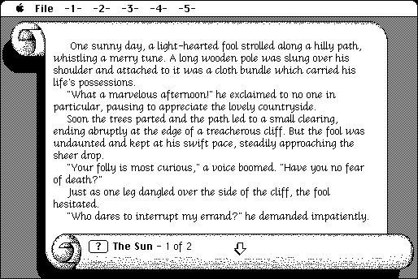

copyright: Cliff Johnson
mod date: May 23, 2002
license: freeware
official url : link removed for not complying with copyright law
My sister’s favorite computer game. “A wandering Fool seeks his fortune in the Land of Tarot in The Fool's Errand and braves the enchantments of the High Priestess. This 1987 award-winning game was the first computer metapuzzle, a rare blend of storytelling, playful hands-on visual puzzles, and cryptic treasure map.” There is a modern sequel.
